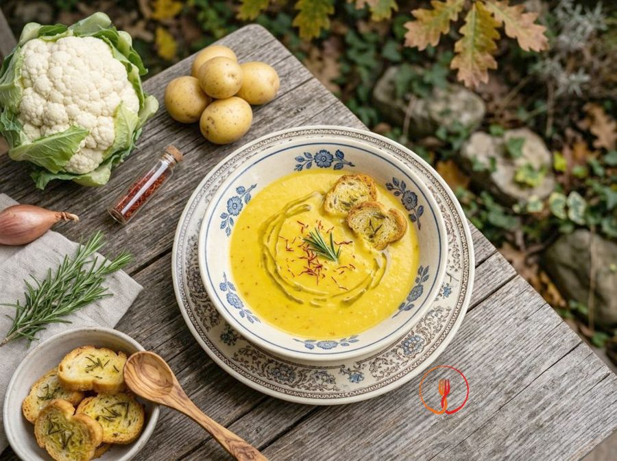

Vellutata di cavolfiore e zafferano con crostini al rosmarino
Un primo piatto avvolgente e raffinato che esalta la dolcezza del cavolfiore attraverso una consistenza setosa e il profumo dello zafferano.
Ingredienti
- Cavolfiore bianco800gr
- Patate a pasta gialla200gr
- Zafferano in pistilli o polvere1 bustina
- Scalogno1 pezzo
- Brodo vegetale
Fallo in casa: Brodo vegetale ›1 litro - Pane di tipo casereccio3 fette
- Rosmarino fresco1 rametto
- Olio extravergine d'oliva3 cucchiai
- Sale e pepe neroq.b.
Allergeni
Glutine, Sedano
Procedimento
- Pulite il cavolfiore e tagliatelo a cimette piccole; pelate le patate e tagliatele a cubetti di circa 2 cm.
- Affettate finemente lo scalogno e fatelo appassire in una pentola capiente con due cucchiai di olio a fuoco basso.
- Aggiungete il cavolfiore e le patate, lasciandoli insaporire per 3-4 minuti mescolando spesso.
- Coprite le verdure con il brodo vegetale bollente e portate a bollore.
- Abbassate la fiamma e cuocete per circa 20-25 minuti, finché le verdure non saranno molto tenere.
- Nel frattempo, tagliate il pane a cubetti e saltatelo in padella con un filo d'olio e il rosmarino tritato fino a renderlo croccante.
- Sciogliete lo zafferano in un mestolo di brodo caldo prelevato dalla pentola e unitelo alle verdure.
- Utilizzate un frullatore a immersione per ridurre il tutto in una crema liscia e vellutata.
- Regolate di sale e pepe e, se necessario, aggiungete altro brodo per ottenere la densità desiderata.
- Servite la vellutata ben calda nei piatti fondi, completando con i crostini al rosmarino e un giro d'olio a crudo.
Valori nutrizionali (stima)
| Per porzione (460 g) | Per 100 g | |
|---|---|---|
| Energia | 920 kJ / 220 kcal | 201 kJ / 48 kcal |
| Proteine | 6.8 g | 1.5 g |
| Carboidrati | 30 g | 6.6 g |
| di cui zuccheri | 5.2 g | 1.1 g |
| Grassi | 7.8 g | 1.7 g |
| di cui saturi | 1.1 g | 0.2 g |
| Fibre | 5.8 g | 1.3 g |
| Sale | 0.8 g | 0.2 g |
Valori stimati con l'AI su dati medi CREA / USDA: sono indicativi e non sostituiscono il parere di un medico o di un nutrizionista.
Apri la ricetta nell'app per la lista della spesa, le schede ingredienti e i negozi vicini.